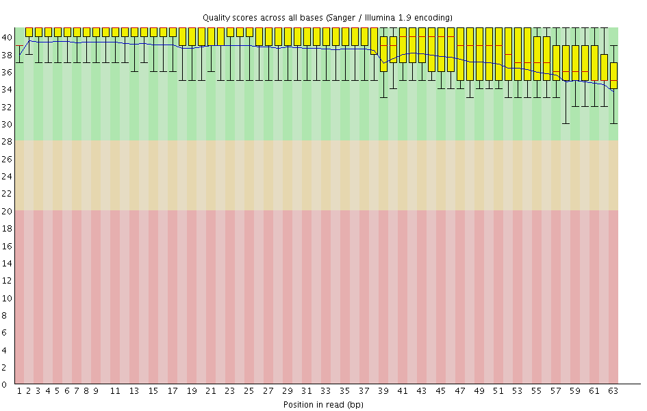
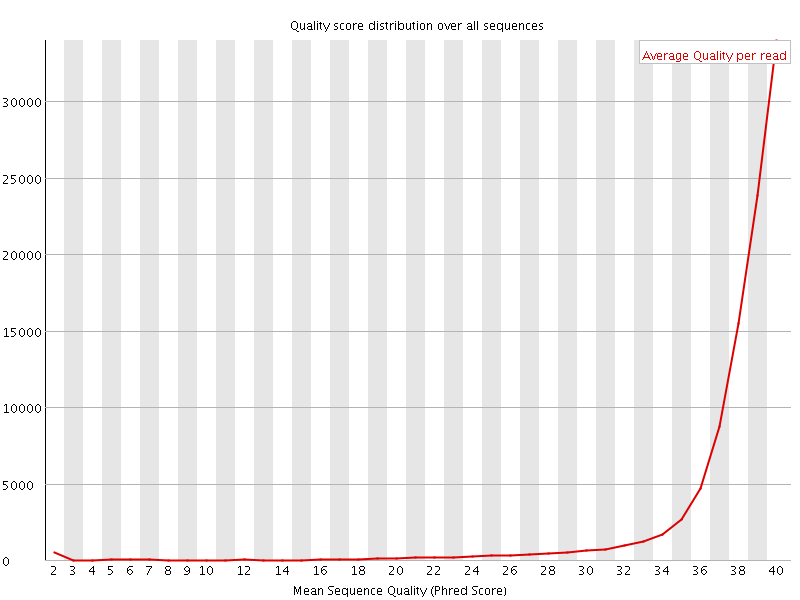
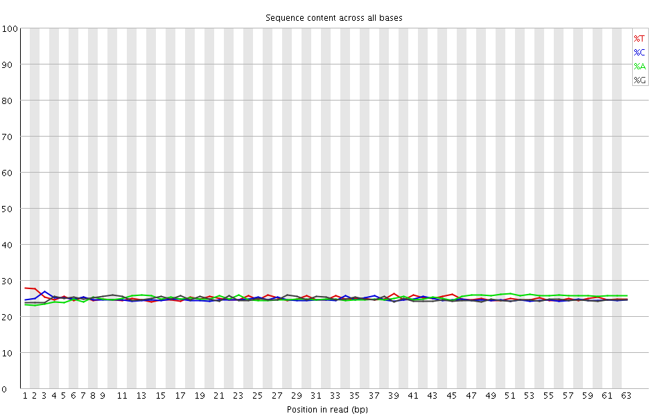
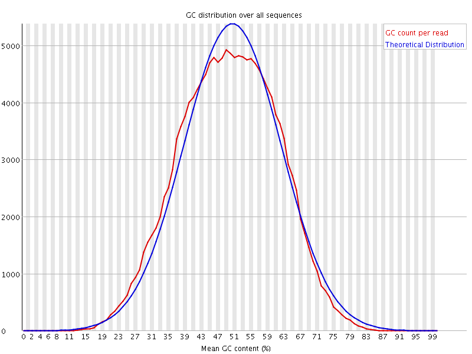
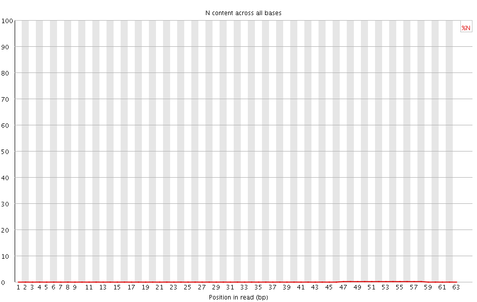
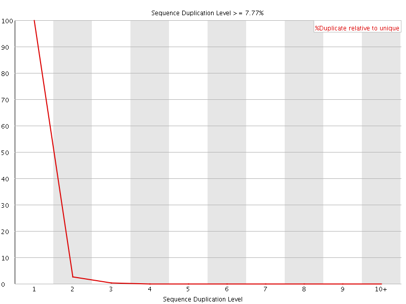
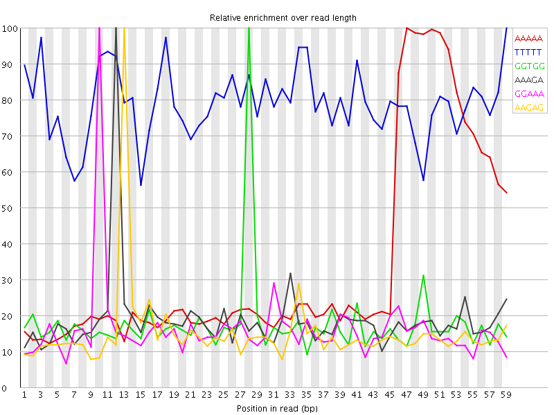

![[OK]](Icons/tick.png) Basic Statistics
Basic Statistics
| Measure | Value |
|---|---|
| Filename | SRR1039509_2.fastq.gz |
| File type | Conventional base calls |
| Encoding | Sanger / Illumina 1.9 |
| Total Sequences | 100000 |
| Filtered Sequences | 0 |
| Sequence length | 63 |
| %GC | 49 |
Per base sequence quality

Per sequence quality scores

Per base sequence content

Per base GC content

Per sequence GC content

Per base N content

Sequence Length Distribution

Sequence Duplication Levels

![[WARN]](Icons/warning.png) Overrepresented sequences
Overrepresented sequences
| Sequence | Count | Percentage | Possible Source |
|---|---|---|---|
| GTCGTGTAGGGAAAGAGTGTAGATCTCGGTGGTCGCCGTATCATTAAAAAAAAAAAAAAAAAA | 182 | 0.182 | Illumina Single End PCR Primer 1 (100% over 45bp) |
![[FAIL]](Icons/error.png) Kmer Content
Kmer Content

| Sequence | Count | Obs/Exp Overall | Obs/Exp Max | Max Obs/Exp Position |
|---|---|---|---|---|
| AAAAA | 30695 | 5.127878 | 15.163132 | 47 |
| TTTTT | 18200 | 3.1059568 | 3.9274132 | 59 |
| GGTGG | 11705 | 2.0581572 | 11.657693 | 28 |
| AAAGA | 11905 | 2.0123155 | 10.661879 | 12 |
| GGAAA | 10565 | 1.8068941 | 11.092968 | 10 |
| AAGAG | 10070 | 1.7222359 | 11.342243 | 13 |
| AGGGA | 9660 | 1.6716174 | 10.101523 | 8 |
| GGGAA | 9490 | 1.6421998 | 10.917809 | 9 |
| TAAAA | 9690 | 1.6257159 | 11.604014 | 45 |
| GAAAG | 9480 | 1.6213305 | 10.838146 | 11 |
| AGAGG | 9220 | 1.5954777 | 5.508269 | 14 |
| GAGGG | 8890 | 1.5565321 | 5.160454 | 15 |
| TTAAA | 8935 | 1.5054495 | 11.205356 | 44 |
| TCATT | 8565 | 1.4720794 | 10.90206 | 41 |
| GTGGT | 7960 | 1.3892306 | 9.205287 | 29 |
| ATCTC | 7890 | 1.3715496 | 11.267738 | 23 |
| TGGTC | 7795 | 1.3657222 | 9.034565 | 30 |
| ATCAT | 7550 | 1.2921116 | 10.348191 | 40 |
| TGTAG | 7280 | 1.2557297 | 9.659878 | 5 |
| AGATC | 7055 | 1.2164546 | 10.719698 | 21 |
| GATCT | 6705 | 1.1610433 | 10.611884 | 22 |
| GAGTG | 6415 | 1.1148262 | 6.1976557 | 15 |
| AGAGT | 6320 | 1.0855031 | 6.327841 | 14 |
| AGTGT | 6165 | 1.0634029 | 5.7447987 | 16 |
| ATTAA | 5945 | 1.0016673 | 10.550527 | 43 |
| GTGTA | 5695 | 0.98233247 | 9.558674 | 4 |
| CTCGG | 5415 | 0.9595671 | 11.069697 | 25 |
| TATCA | 5430 | 0.9292936 | 9.580458 | 39 |
| GTAGG | 5325 | 0.9254014 | 10.298371 | 6 |
| GTAGA | 5315 | 0.9128875 | 9.514217 | 19 |
| CATTA | 5120 | 0.87623996 | 10.300291 | 42 |
| CGCCG | 4515 | 0.8092176 | 10.666906 | 34 |
| CGGTG | 4580 | 0.80845803 | 9.882539 | 27 |
| TAGGG | 4585 | 0.79680103 | 9.990957 | 7 |
| TCTCG | 4315 | 0.7589478 | 10.624486 | 24 |
| TAGAT | 4375 | 0.74584097 | 9.393146 | 20 |
| TCGCC | 4040 | 0.7186926 | 9.225199 | 33 |
| GCCGT | 4020 | 0.7123656 | 10.181015 | 35 |
| GTATC | 3895 | 0.67446136 | 9.693548 | 38 |
| CGTGT | 3845 | 0.67366284 | 9.605814 | 3 |
| TCGTG | 3775 | 0.6613985 | 9.347594 | 2 |
| TCGGT | 3190 | 0.55890363 | 9.6540785 | 26 |
| GTCGC | 3055 | 0.5413624 | 8.876644 | 32 |
| GGTCG | 2955 | 0.5216143 | 8.738246 | 31 |
| GTCGT | 2965 | 0.5194825 | 9.347593 | 1 |
| CCGTA | 2505 | 0.43872064 | 9.80423 | 36 |
| CGTAT | 2215 | 0.3835512 | 9.489473 | 37 |